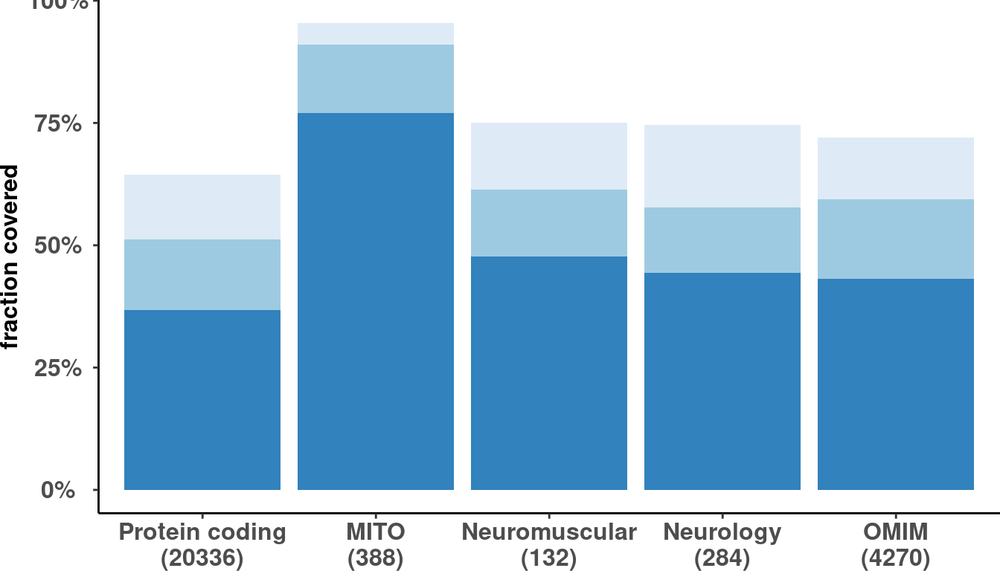

# Load config
source('src/config.R')
# Load disease genes table
# dis_genes <- fread('/s/project/mitoMultiOmics/multiOMICs_integration/datasets/disease_genes.tsv')
dis_genes <- fread(snakemake@input$disease_genes)
# Get all protein coding genes
# genecode_v29 <- fread('/s/project/mitoMultiOmics/multiOMICs_integration/datasets/gene_annotation_v29.tsv')
genecode_v29 <- fread(snakemake@input$gencode_annotation)
genecode_v29[, geneID := toupper(gene_name_unique)]
protein_coding <- genecode_v29[gene_type == 'protein_coding']
protein_coding[, DISEASE := 'Protein coding']
protein_coding <- protein_coding[geneID != "" & !is.na(geneID) , c("geneID", "DISEASE")]
protein_coding <- protein_coding[!duplicated(protein_coding)]
protein_coding[, total := .N]
protein_coding[, ORIGIN := 'genecode v29']
# Combine
dis_genes <- rbind( dis_genes, protein_coding)
dis_genes[ , geneID := toupper(geneID)]
dis_genes <- dis_genes[!duplicated(dis_genes)]
# Subset only protein coding genes
dis_genes <- dis_genes[geneID %in% unique(protein_coding$geneID)]
dis_genes[ , total := .N, by = DISEASE]
rm(protein_coding, genecode_v29)
dis_genes <- dis_genes[DISEASE %in% c("Protein coding", "MITO", "Neuromuscular", "Neurology", "OMIM" ) ]
####################################################################
# READ ANNOTATION
# sa <- fread('/s/project/mitoMultiOmics/multiOMICs_integration/raw_data/proteomics_annotation.tsv')
sa <- fread(snakemake@input$sample_annotation)
sa <- sa[USE_FOR_PROTEOMICS_PAPER == T]
### RNA unfiltered
ods <- readRDS(snakemake@input$ods_unfiltered)
# ods <- readRDS("/s/project/mitoMultiOmics/multiOMICs_integration/processed_data/outrider/ods_unfiltered.Rds")
ods_100 <- OUTRIDER::filterExpression(ods, percentile = 0) # detected in all
ods_50 <- OUTRIDER::filterExpression(ods, percentile = 0.5) # detected in 50%
ods_once <- OUTRIDER::filterExpression(ods, percentile = 0.9999) # detected in 0,001% (once)
rm(ods)
rnaseq <- as.data.table(rowData(ods_once))
rnaseq[, once := T]
rnaseq <- rnaseq[ , c("gene_name_unique", "once")]
rnaseq[ , half := gene_name_unique %in% rowData(ods_50)$gene_name_unique ]
rnaseq[ , all := gene_name_unique %in% rowData(ods_100)$gene_name_unique ]
setnames(rnaseq, "gene_name_unique", "geneID")
rnaseq[ , geneID := toupper(geneID)]
rnaseq <- rnaseq[!duplicated(rnaseq)]
# write_tsv(rnaseq, '/s/project/mitoMultiOmics/multiOMICs_integration/processed_data/integration/detected_transcripts.tsv')
write_tsv(rnaseq, snakemake@output$detected_transcripts)
# Combine with dis gene list
rnaseq <- rnaseq[geneID %in% unique(dis_genes$geneID) ]
dis_genes_fib <- merge(dis_genes, rnaseq, by = "geneID")
dis_genes_fib[, TISSUE := "Fibroblasts"]
dis_genes_fib[ once == T, ONCE_1 := .N, by = DISEASE ]
dis_genes_fib[ half == T, HALF_1 := .N, by = DISEASE ]
dis_genes_fib[ all == T, ALL := .N, by = DISEASE ]
dis_genes_fib <- dis_genes_fib[, c("TISSUE", "DISEASE", "total", "ONCE_1","HALF_1","ALL" )]
dis_genes_fib <- dis_genes_fib[!duplicated(dis_genes_fib)]
dis_genes_fib[, HALF := HALF_1 - ALL]
dis_genes_fib[, ONCE := ONCE_1 - HALF_1]
dis_genes_fib <- dis_genes_fib[, c("TISSUE", "DISEASE", "total", "ONCE","HALF","ALL" )]
dis_genes_fib <- dis_genes_fib[!is.na(ALL)]
detected_fib <- melt(dis_genes_fib, id.vars=c("TISSUE", "DISEASE", "total" )) %>% as.data.table()
detected_fib <- detected_fib[!duplicated(detected_fib)]
setnames(detected_fib, c("variable", "value" ), c("DETECTED", "N"))
detected_fib[, prop:= N / total ]
detected_fib$DISEASE <- factor(detected_fib$DISEASE, levels = c("Protein coding", "MITO", "Neuromuscular", "Neurology", "OMIM" ))
detected_fib$dis_n <- paste0(detected_fib$DISEASE, "\n" ,"(",detected_fib$total, ")")
# unique(detected_fib$dis_n)
detected_fib$dis_n <- factor(detected_fib$dis_n, levels = c("Protein coding\n(20336)", "MITO\n(388)", "Neuromuscular\n(132)", "Neurology\n(284)", "OMIM\n(4270)" ))
RNA-seq coverage in fibroblasts
ggplot(detected_fib, aes(dis_n, prop)) +
geom_col(aes(fill = DETECTED)) + # stat= 'identity',
scale_y_continuous( labels=scales::percent) +
scale_fill_brewer(palette="Blues") +
labs( y = "fraction covered")+
theme_classic()+
theme(legend.position="none",
axis.title.y = element_text(face="bold", size=12) ,
axis.title.x = element_blank() ,
axis.text.x = element_text(size=12, face="bold") ,
legend.title = element_blank(), legend.direction = "horizontal",
axis.text.y = element_text(face="bold", size=12, hjust = 0.5),
plot.margin = margin(0, 0, 0, 0, "cm"))

# write_tsv(detected_fib, '/s/project/mitoMultiOmics/multiOMICs_integration/processed_data/integration/rna_coverage.tsv')
write_tsv(detected_fib, snakemake@output$rna_coverage)
IyctLS0KIycgdGl0bGU6IERpc2Vhc2UgZ2VuZSBjb3ZlcmFnZSBieSBSTkFzZXEKIycgYXV0aG9yOiBzbWlybm92ZAojJyB3YjoKIycgIGlucHV0OiAKIycgIC0gZ2VuY29kZV9hbm5vdGF0aW9uOiAnYHNtIGNvbmZpZ1siREFUQVNFVFMiXSArICIvZ2VuZV9hbm5vdGF0aW9uX3YyOS50c3YiYCcKIycgIC0gZGlzZWFzZV9nZW5lczogJ2BzbSBjb25maWdbIkRBVEFTRVRTIl0gKyAiL2Rpc2Vhc2VfZ2VuZXMudHN2ImAnCiMnICAtIHNhbXBsZV9hbm5vdGF0aW9uOiAnYHNtIGNvbmZpZ1siQU5OT1RBVElPTiJdYCcKIycgIC0gb2RzX3VuZmlsdGVyZWQ6ICdgc20gY29uZmlnWyJQUk9DX0RBVEEiXSArICIvb3V0cmlkZXIvb2RzX3VuZmlsdGVyZWQuUmRzImAnCiMnICBvdXRwdXQ6CiMnICAtIGRldGVjdGVkX3RyYW5zY3JpcHRzOiAnYHNtIGNvbmZpZ1siUFJPQ19EQVRBIl0gKyAiL2ludGVncmF0aW9uL2RldGVjdGVkX3RyYW5zY3JpcHRzLnRzdiJgJwojJyAgLSBybmFfY292ZXJhZ2U6ICdgc20gY29uZmlnWyJQUk9DX0RBVEEiXSArICIvaW50ZWdyYXRpb24vcm5hX2NvdmVyYWdlLnRzdiJgJwojJyBvdXRwdXQ6IAojJyAgIGh0bWxfZG9jdW1lbnQ6CiMnICAgIGNvZGVfZm9sZGluZzogaGlkZQojJyAgICBjb2RlX2Rvd25sb2FkOiBUUlVFCiMnLS0tCgojIExvYWQgY29uZmlnCnNvdXJjZSgnc3JjL2NvbmZpZy5SJykKCgojIExvYWQgZGlzZWFzZSBnZW5lcyB0YWJsZQojIGRpc19nZW5lcyA8LSBmcmVhZCgnL3MvcHJvamVjdC9taXRvTXVsdGlPbWljcy9tdWx0aU9NSUNzX2ludGVncmF0aW9uL2RhdGFzZXRzL2Rpc2Vhc2VfZ2VuZXMudHN2JykKZGlzX2dlbmVzIDwtIGZyZWFkKHNuYWtlbWFrZUBpbnB1dCRkaXNlYXNlX2dlbmVzKQoKCiMgR2V0IGFsbCBwcm90ZWluIGNvZGluZyBnZW5lcwojIGdlbmVjb2RlX3YyOSA8LSBmcmVhZCgnL3MvcHJvamVjdC9taXRvTXVsdGlPbWljcy9tdWx0aU9NSUNzX2ludGVncmF0aW9uL2RhdGFzZXRzL2dlbmVfYW5ub3RhdGlvbl92MjkudHN2JykKZ2VuZWNvZGVfdjI5IDwtIGZyZWFkKHNuYWtlbWFrZUBpbnB1dCRnZW5jb2RlX2Fubm90YXRpb24pCmdlbmVjb2RlX3YyOVssIGdlbmVJRCA6PSB0b3VwcGVyKGdlbmVfbmFtZV91bmlxdWUpXQpwcm90ZWluX2NvZGluZyA8LSBnZW5lY29kZV92MjlbZ2VuZV90eXBlID09ICdwcm90ZWluX2NvZGluZyddCnByb3RlaW5fY29kaW5nWywgRElTRUFTRSA6PSAnUHJvdGVpbiBjb2RpbmcnXQpwcm90ZWluX2NvZGluZyA8LSBwcm90ZWluX2NvZGluZ1tnZW5lSUQgIT0gIiIgJiAhaXMubmEoZ2VuZUlEKSAsIGMoImdlbmVJRCIsICJESVNFQVNFIildCnByb3RlaW5fY29kaW5nIDwtIHByb3RlaW5fY29kaW5nWyFkdXBsaWNhdGVkKHByb3RlaW5fY29kaW5nKV0KcHJvdGVpbl9jb2RpbmdbLCB0b3RhbCA6PSAuTl0KcHJvdGVpbl9jb2RpbmdbLCBPUklHSU4gOj0gJ2dlbmVjb2RlIHYyOSddCgojIENvbWJpbmUKZGlzX2dlbmVzIDwtIHJiaW5kKCBkaXNfZ2VuZXMsIHByb3RlaW5fY29kaW5nKQpkaXNfZ2VuZXNbICwgZ2VuZUlEIDo9IHRvdXBwZXIoZ2VuZUlEKV0KZGlzX2dlbmVzIDwtIGRpc19nZW5lc1shZHVwbGljYXRlZChkaXNfZ2VuZXMpXQoKIyBTdWJzZXQgb25seSBwcm90ZWluIGNvZGluZyBnZW5lcwpkaXNfZ2VuZXMgPC0gZGlzX2dlbmVzW2dlbmVJRCAlaW4lIHVuaXF1ZShwcm90ZWluX2NvZGluZyRnZW5lSUQpXQpkaXNfZ2VuZXNbICwgdG90YWwgOj0gLk4sIGJ5ID0gRElTRUFTRV0Kcm0ocHJvdGVpbl9jb2RpbmcsIGdlbmVjb2RlX3YyOSkKCmRpc19nZW5lcyA8LSBkaXNfZ2VuZXNbRElTRUFTRSAlaW4lIGMoIlByb3RlaW4gY29kaW5nIiwgIk1JVE8iLCAiTmV1cm9tdXNjdWxhciIsICJOZXVyb2xvZ3kiLCAiT01JTSIgKSBdCgojIyMjIyMjIyMjIyMjIyMjIyMjIyMjIyMjIyMjIyMjIyMjIyMjIyMjIyMjIyMjIyMjIyMjIyMjIyMjIyMjIyMjIyMjIwoKCiMgUkVBRCBBTk5PVEFUSU9OCiMgc2EgPC0gZnJlYWQoJy9zL3Byb2plY3QvbWl0b011bHRpT21pY3MvbXVsdGlPTUlDc19pbnRlZ3JhdGlvbi9yYXdfZGF0YS9wcm90ZW9taWNzX2Fubm90YXRpb24udHN2JykKc2EgPC0gZnJlYWQoc25ha2VtYWtlQGlucHV0JHNhbXBsZV9hbm5vdGF0aW9uKQpzYSA8LSBzYVtVU0VfRk9SX1BST1RFT01JQ1NfUEFQRVIgPT0gVF0KCgojIyMgUk5BIHVuZmlsdGVyZWQKb2RzIDwtIHJlYWRSRFMoc25ha2VtYWtlQGlucHV0JG9kc191bmZpbHRlcmVkKQojIG9kcyA8LSByZWFkUkRTKCIvcy9wcm9qZWN0L21pdG9NdWx0aU9taWNzL211bHRpT01JQ3NfaW50ZWdyYXRpb24vcHJvY2Vzc2VkX2RhdGEvb3V0cmlkZXIvb2RzX3VuZmlsdGVyZWQuUmRzIikKb2RzXzEwMCA8LSBPVVRSSURFUjo6ZmlsdGVyRXhwcmVzc2lvbihvZHMsIHBlcmNlbnRpbGUgPSAwKSAgICMgZGV0ZWN0ZWQgaW4gYWxsCm9kc181MCA8LSBPVVRSSURFUjo6ZmlsdGVyRXhwcmVzc2lvbihvZHMsIHBlcmNlbnRpbGUgPSAwLjUpICAjIGRldGVjdGVkIGluIDUwJQpvZHNfb25jZSA8LSBPVVRSSURFUjo6ZmlsdGVyRXhwcmVzc2lvbihvZHMsIHBlcmNlbnRpbGUgPSAwLjk5OTkpICMgZGV0ZWN0ZWQgaW4gMCwwMDElIChvbmNlKQpybShvZHMpCgpybmFzZXEgPC0gYXMuZGF0YS50YWJsZShyb3dEYXRhKG9kc19vbmNlKSkKcm5hc2VxWywgb25jZSA6PSBUXQpybmFzZXEgPC0gcm5hc2VxWyAsIGMoImdlbmVfbmFtZV91bmlxdWUiLCAib25jZSIpXQpybmFzZXFbICwgaGFsZiA6PSBnZW5lX25hbWVfdW5pcXVlICVpbiUgcm93RGF0YShvZHNfNTApJGdlbmVfbmFtZV91bmlxdWUgXQpybmFzZXFbICwgYWxsIDo9IGdlbmVfbmFtZV91bmlxdWUgJWluJSByb3dEYXRhKG9kc18xMDApJGdlbmVfbmFtZV91bmlxdWUgXQpzZXRuYW1lcyhybmFzZXEsICJnZW5lX25hbWVfdW5pcXVlIiwgImdlbmVJRCIpCnJuYXNlcVsgLCBnZW5lSUQgOj0gdG91cHBlcihnZW5lSUQpXQpybmFzZXEgPC0gcm5hc2VxWyFkdXBsaWNhdGVkKHJuYXNlcSldCgoKIyB3cml0ZV90c3Yocm5hc2VxLCAnL3MvcHJvamVjdC9taXRvTXVsdGlPbWljcy9tdWx0aU9NSUNzX2ludGVncmF0aW9uL3Byb2Nlc3NlZF9kYXRhL2ludGVncmF0aW9uL2RldGVjdGVkX3RyYW5zY3JpcHRzLnRzdicpCndyaXRlX3RzdihybmFzZXEsICBzbmFrZW1ha2VAb3V0cHV0JGRldGVjdGVkX3RyYW5zY3JpcHRzKQoKCgoKIyBDb21iaW5lIHdpdGggZGlzIGdlbmUgbGlzdApybmFzZXEgPC0gcm5hc2VxW2dlbmVJRCAlaW4lIHVuaXF1ZShkaXNfZ2VuZXMkZ2VuZUlEKSBdCmRpc19nZW5lc19maWIgPC0gbWVyZ2UoZGlzX2dlbmVzLCBybmFzZXEsIGJ5ID0gImdlbmVJRCIpCmRpc19nZW5lc19maWJbLCBUSVNTVUUgOj0gIkZpYnJvYmxhc3RzIl0KZGlzX2dlbmVzX2ZpYlsgb25jZSA9PSBULCBPTkNFXzEgOj0gLk4sIGJ5ID0gRElTRUFTRSBdCmRpc19nZW5lc19maWJbIGhhbGYgPT0gVCwgSEFMRl8xIDo9IC5OLCBieSA9IERJU0VBU0UgXQpkaXNfZ2VuZXNfZmliWyBhbGwgPT0gVCwgQUxMIDo9IC5OLCBieSA9IERJU0VBU0UgXQpkaXNfZ2VuZXNfZmliIDwtIGRpc19nZW5lc19maWJbLCBjKCJUSVNTVUUiLCAiRElTRUFTRSIsICJ0b3RhbCIsICJPTkNFXzEiLCJIQUxGXzEiLCJBTEwiICApXQpkaXNfZ2VuZXNfZmliIDwtIGRpc19nZW5lc19maWJbIWR1cGxpY2F0ZWQoZGlzX2dlbmVzX2ZpYildCmRpc19nZW5lc19maWJbLCBIQUxGIDo9IEhBTEZfMSAtIEFMTF0KZGlzX2dlbmVzX2ZpYlssIE9OQ0UgOj0gT05DRV8xIC0gSEFMRl8xXQpkaXNfZ2VuZXNfZmliIDwtIGRpc19nZW5lc19maWJbLCBjKCJUSVNTVUUiLCAiRElTRUFTRSIsICJ0b3RhbCIsICJPTkNFIiwiSEFMRiIsIkFMTCIgICldCmRpc19nZW5lc19maWIgPC0gZGlzX2dlbmVzX2ZpYlshaXMubmEoQUxMKV0KCmRldGVjdGVkX2ZpYiA8LSBtZWx0KGRpc19nZW5lc19maWIsIGlkLnZhcnM9YygiVElTU1VFIiwgIkRJU0VBU0UiLCAidG90YWwiICkpICU+JSBhcy5kYXRhLnRhYmxlKCkKZGV0ZWN0ZWRfZmliIDwtIGRldGVjdGVkX2ZpYlshZHVwbGljYXRlZChkZXRlY3RlZF9maWIpXQpzZXRuYW1lcyhkZXRlY3RlZF9maWIsIGMoInZhcmlhYmxlIiwgInZhbHVlIiApLCBjKCJERVRFQ1RFRCIsICJOIikpCmRldGVjdGVkX2ZpYlssIHByb3A6PSBOIC8gdG90YWwgXQoKCmRldGVjdGVkX2ZpYiRESVNFQVNFIDwtIGZhY3RvcihkZXRlY3RlZF9maWIkRElTRUFTRSwgbGV2ZWxzID0gYygiUHJvdGVpbiBjb2RpbmciLCAiTUlUTyIsICJOZXVyb211c2N1bGFyIiwgIk5ldXJvbG9neSIsICJPTUlNIiApKQoKZGV0ZWN0ZWRfZmliJGRpc19uIDwtIHBhc3RlMChkZXRlY3RlZF9maWIkRElTRUFTRSwgIlxuIiAgLCIoIixkZXRlY3RlZF9maWIkdG90YWwsICIpIikKIyB1bmlxdWUoZGV0ZWN0ZWRfZmliJGRpc19uKQpkZXRlY3RlZF9maWIkZGlzX24gPC0gZmFjdG9yKGRldGVjdGVkX2ZpYiRkaXNfbiwgbGV2ZWxzID0gYygiUHJvdGVpbiBjb2RpbmdcbigyMDMzNikiLCAiTUlUT1xuKDM4OCkiLCAiTmV1cm9tdXNjdWxhclxuKDEzMikiLCAiTmV1cm9sb2d5XG4oMjg0KSIsICJPTUlNXG4oNDI3MCkiICkpCgoKCiMnICMgUk5BLXNlcSBjb3ZlcmFnZSBpbiBmaWJyb2JsYXN0cwojKyBmaWcud2lkdGg9NywgZmlnLmhlaWdodD00CmdncGxvdChkZXRlY3RlZF9maWIsIGFlcyhkaXNfbiwgcHJvcCkpICsgCiAgZ2VvbV9jb2woYWVzKGZpbGwgPSBERVRFQ1RFRCkpICsgICMgc3RhdD0gJ2lkZW50aXR5JywgCiAgc2NhbGVfeV9jb250aW51b3VzKCBsYWJlbHM9c2NhbGVzOjpwZXJjZW50KSArCiAgc2NhbGVfZmlsbF9icmV3ZXIocGFsZXR0ZT0iQmx1ZXMiKSArCiAgbGFicyggeSA9ICJmcmFjdGlvbiBjb3ZlcmVkIikrCiAgdGhlbWVfY2xhc3NpYygpKwogIHRoZW1lKGxlZ2VuZC5wb3NpdGlvbj0ibm9uZSIsICAKICAgICAgICBheGlzLnRpdGxlLnkgPSBlbGVtZW50X3RleHQoZmFjZT0iYm9sZCIsIHNpemU9MTIpICwgCiAgICAgICAgYXhpcy50aXRsZS54ID0gZWxlbWVudF9ibGFuaygpICwKICAgICAgICBheGlzLnRleHQueCA9IGVsZW1lbnRfdGV4dChzaXplPTEyLCBmYWNlPSJib2xkIikgLAogICAgICAgIGxlZ2VuZC50aXRsZSA9IGVsZW1lbnRfYmxhbmsoKSwgbGVnZW5kLmRpcmVjdGlvbiA9ICJob3Jpem9udGFsIiwgCiAgICAgICAgYXhpcy50ZXh0LnkgPSBlbGVtZW50X3RleHQoZmFjZT0iYm9sZCIsIHNpemU9MTIsIGhqdXN0ID0gMC41KSwKICAgICAgICBwbG90Lm1hcmdpbiA9IG1hcmdpbigwLCAwLCAwLCAwLCAiY20iKSkgCgojIHdyaXRlX3RzdihkZXRlY3RlZF9maWIsICcvcy9wcm9qZWN0L21pdG9NdWx0aU9taWNzL211bHRpT01JQ3NfaW50ZWdyYXRpb24vcHJvY2Vzc2VkX2RhdGEvaW50ZWdyYXRpb24vcm5hX2NvdmVyYWdlLnRzdicpCndyaXRlX3RzdihkZXRlY3RlZF9maWIsICBzbmFrZW1ha2VAb3V0cHV0JHJuYV9jb3ZlcmFnZSkKCgo=